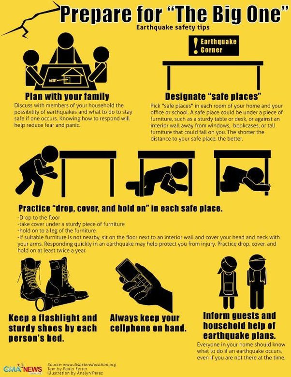
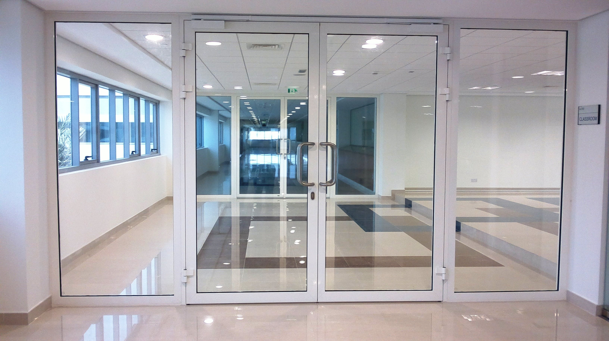
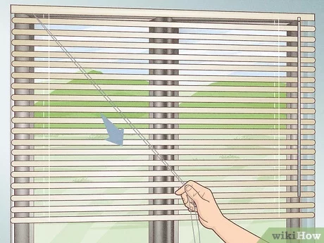

Step 1: Identify Safe Zones
Familiarize yourself with safe zones in your school or home where you can seek shelter away from windows.
These areas should be located in interior rooms or corridors, preferably with sturdy walls and no windows.
Step 2: Move to Interior Rooms
If you are indoors during an emergency, such as an earthquake or severe storm, move to an interior room or hallway away from windows.
Seek shelter under a sturdy piece of furniture, such as a desk or table, if available.
Step 3: Avoid Glass Doors
Stay away from glass doors or sliding glass doors during emergencies, as they can shatter easily and pose a significant risk of injury.
Seek shelter in a safer location away from these areas.
Step 4: Stay Low to the Ground
If you are unable to move to a windowless area, crouch down low to the ground to minimize exposure to flying debris and broken glass.
Cover your head and neck with your arms for additional protection.
Step 5: Close Window Coverings
If time permits before the emergency occurs, close blinds, curtains, or window coverings to reduce the risk of shattered glass entering the room.
This can provide an additional layer of protection against debris.
Step 6: Avoid Exterior Walls
During earthquakes or severe storms, avoid standing near exterior walls, especially those with windows or glass fixtures.
Seek shelter against interior walls, which are generally safer and less prone to collapse.
Step 7: Stay Informed
Stay informed about potential emergencies and follow instructions provided by teachers, school staff, or emergency responders.
Listen for updates and guidance on where to seek shelter and how to stay safe during the situation.
Step 8: Remain Calm
Stay calm and composed during emergencies to make rational decisions and follow safety protocols effectively.
Focus on taking the necessary steps to protect yourself and others from harm.
Step 9: Educate Others
Share information about the importance of staying away from windows during emergencies with your classmates, friends, and family members.
Encourage them to practice safe behaviors and take precautions to stay safe during emergencies.